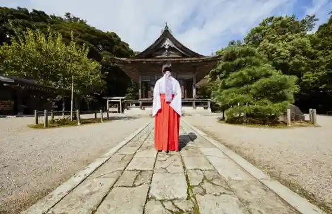
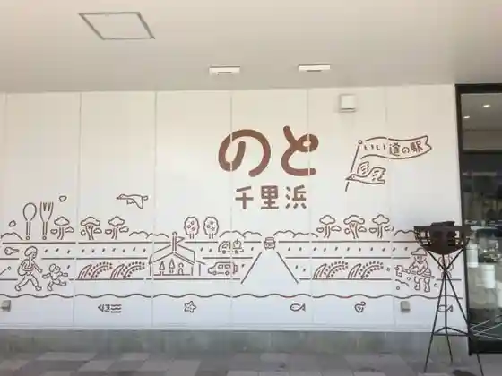
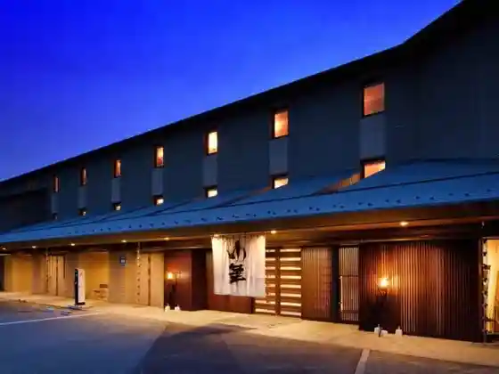

Uchu Kagaku Museum Kosumoairu Hakui
Hakui, Ishikawa · 0767-22-9888 · Official / source link
Noto Kuniichi Miya Keta Taisha
Hakui, Ishikawa · 0767-22-0602 · Official / source link

Roadside Station no to Chirihama
Hakui, Ishikawa · 0767-22-3891 · Official / source link

Chirihama Hotel Yu Hana
Hakui, Ishikawa · 0767-22-7500 · Official / source link

Noto Chirihama Resutohausu
Hakui, Ishikawa · 0767-22-2141 · Official / source link
Honzan Myo Sei Tera
Hakui, Ishikawa · 0767-27-1226 · Official / source link
Gion Iwa
Hakui, Ishikawa · 0767-22-1118 · Official / source link
Kamiko Village
Hakui, Ishikawa · 0767-26-3580 · Official / source link
National Noto Seishonen Koryu no Ie
Hakui, Ishikawa · 0767-22-3121 · Official / source link
Nagamitsu Tera (Ken Shitei Historic Site)
Hakui, Ishikawa · 0767-26-0156 · Official / source link
Nagisa Mobireji
Hakui, Ishikawa · 0767-22-2141 · Official / source link
Yuforia Chirihama
Hakui, Ishikawa · 0767-22-9000 · Official / source link
Hakucho Village (Ochi Kata)
Hakui, Ishikawa · 0767-22-1118 · Official / source link
Hakui Mayu Take Daichi Shizen Green Park
Hakui, Ishikawa · 0767-22-1119 · Official / source link
Yoshizaki Tsugi Ba Yayoi Park
Hakui, Ishikawa · 0767-22-1118 · Official / source link
Shibagaki Kofun Gun (Ken Shitei Historic Site)
Hakui, Ishikawa · 0767-22-1118 · Official / source link
Hakui Shrine
Hakui, Ishikawa · 0767-22-0817 · Official / source link
Noto Jofu Orimoto Yamazaki Asaori Mono Workshop
Hakui, Ishikawa · 0767-26-0240 · Official / source link
Goishigamine Haikingukosu
Hakui, Ishikawa · 0767-22-1118 · Official / source link
Otomo Iemochi Kahi (Hakui Chirihama Town)
Hakui, Ishikawa · 0767-22-1118 · Official / source link
Shogaku In
Hakui, Ishikawa · 0767-22-0838 · Official / source link
Hakui Chuo Park
Hakui, Ishikawa · 0767-22-1118 · Official / source link
Yutaka Zai In
Hakui, Ishikawa · 0767-26-1065 · Official / source link
Hakui Kanko Boranteiagaido Rekishi Roman (Konchima Hakui)
Hakui, Ishikawa · Official / source link
Nagate Shima Shizenkansatsu Kosu
Hakui, Ishikawa · 0767-22-1118 · Official / source link
Noto Taisha Yaki Kamamoto
Hakui, Ishikawa · 0767-22-0622 · Official / source link
Hakui Folk History Museum
Hakui, Ishikawa · 0767-22-5998 · Official / source link
Takazawa Jozo
Hakui, Ishikawa · 0767-26-0261 · Official / source link
Origuchi Nobuo Fushi no Kahi
Hakui, Ishikawa · 0767-22-1118 · Official / source link
Hakui Yakusho
Hakui, Ishikawa · 0767-22-1111 · Official / source link